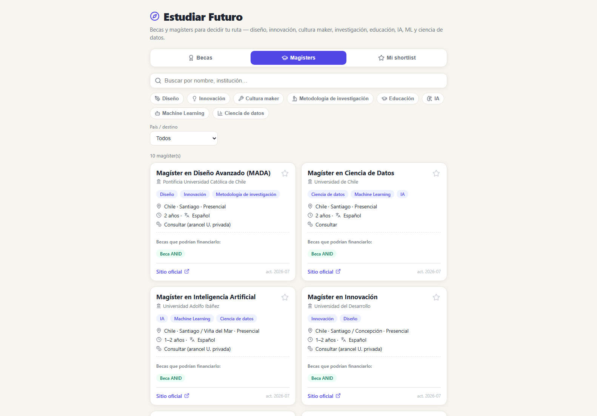

Estudiar Futuro
Comparar becas y magísters de Chile y el extranjero según lo que uno realmente quiere estudiar.

Un tablero para decidir un postgrado: compara programas de magíster y becas disponibles en Chile y fuera, y los cruza con el área de interés de quien consulta. La pregunta que intenta contestar no es "qué programas existen" sino "cuál me conviene a mí".
Hoy tiene nueve becas reales cargadas a mano (Beca Chile, ANID, Chevening, Fulbright, DAAD y otras), con su cobertura desglosada en matrícula, manutención, pasajes y seguro, los requisitos de cada una y el mes de convocatoria. Se filtra por ocho áreas y por país de destino, y se puede armar una lista corta. Para ser un proyecto de un día, la interfaz está más terminada de lo que sugiere llamarlo mínimo funcional.
Lo que le falta es justamente lo que la haría útil: la capa de mercado y sueldos. Sin saber qué paga cada camino, la comparación se queda en la mitad: compara costos y requisitos, pero no retornos. Es el único proyecto del conjunto sin documentación de ningún tipo, y eso también hay que arreglarlo antes de mostrarlo.
Bitácora
- 2026-07-04Mínimo funcionalQueda la comparación andando con datos cargados a mano: ~9 becas y ~10 programas. Pendiente la capa de mercado y sueldos.
- 2026-07-04Arranca el proyecto
Pantallas
